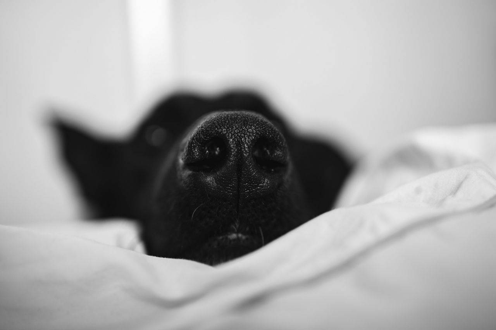

CLOSE-UPS
https://every/close/ups
To be successful, one needs to have at first a close look at the problem.
https://every/close/ups
To be successful, one needs to have at first a close look at the problem.
https://look/at/distance
Then one needs to take a step back and observe from distance.
https://concrete/to/abstract
Before being able to connect the details of a concrete project to an abstract pattern.